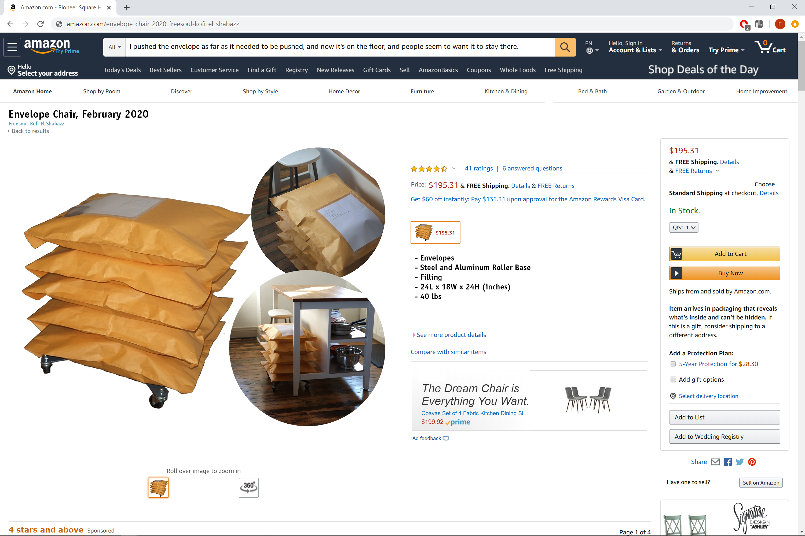
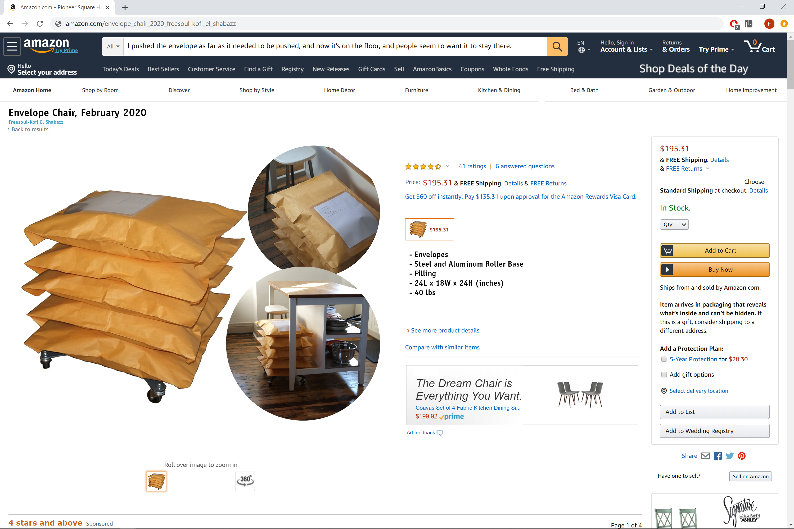
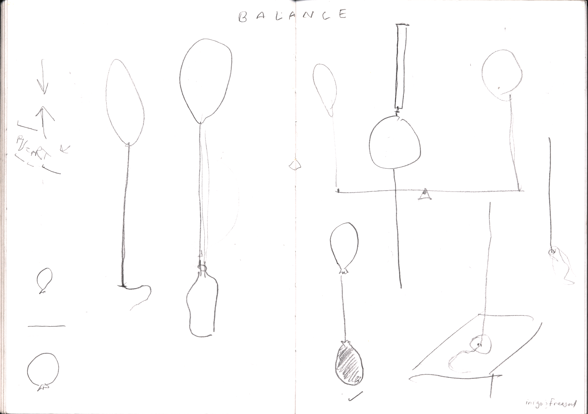
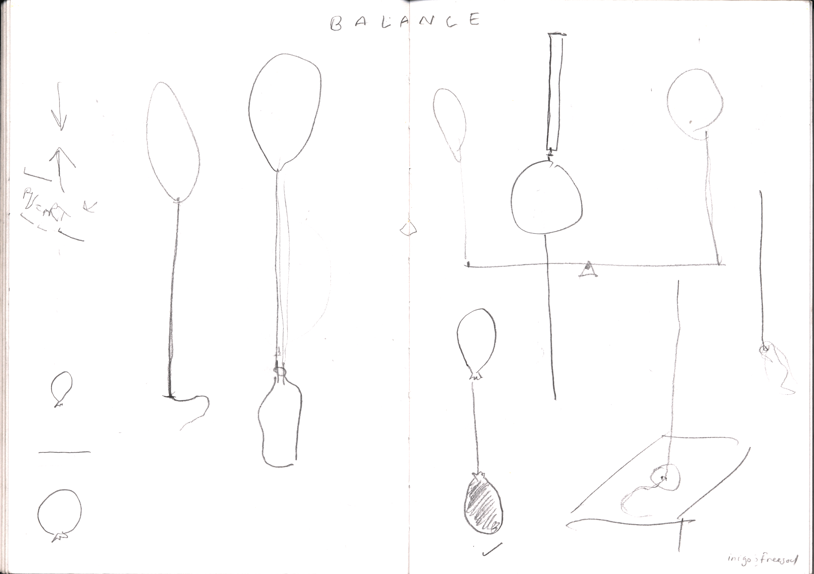
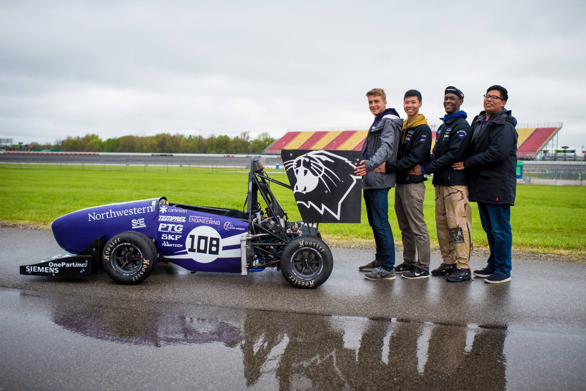
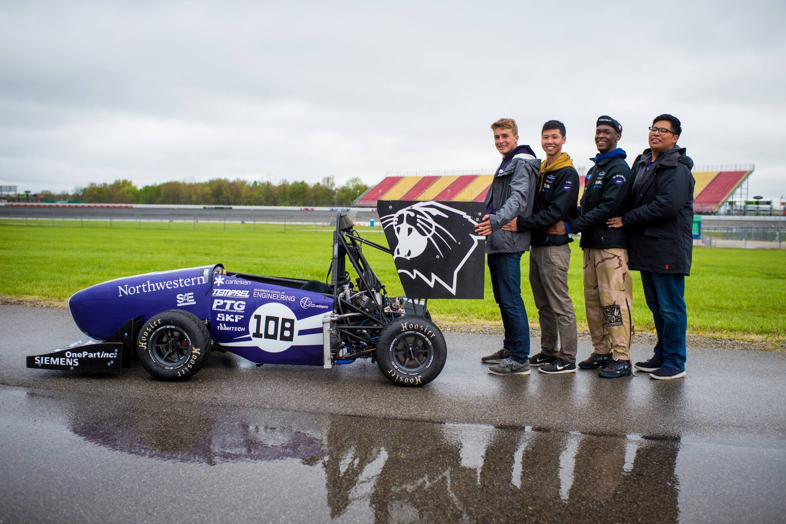

A Shadow Field in America, 2020
Acrylic on canvas, ink on paper, red pin
close window

 


The Envelope Chair, 2020
Envelopes, Steel and Aluminum Base, Filling
24L x 18W x 24H inches, 40lbs
close window

Untitled (with Nelly Lin), 2019
androgynous mannequin, projector, computer + software, security
camera + router, tripod, concealed microphone + speaker,
extruded aluminum structural materials, mirror panes,
polycarbonate panes approx. 320 sq. ft.
Our sculpture established several bodies in conversation with the guests who entered the space. The security camera was mounted on a tripod with focus on the entrance of the gallery, it was to be the first thing guests saw when they entered the space. Cords ran from the camera to the router and more cords connected the router to the computer. The projector was also connected to the computer. The mannequin stood several feet away from the aforementioned materials and behind it stood a box of similar height (~5 feet). In the box, the three internal faces were mirrored and the fourth wall allowed for guests to examine the inside of the box through a head-shaped hole cut in a pane of polycarbonate. Mapping software was used to project onto the head of the mannequin.
To the guests, as they entered the space it appeared that the camera recorded their faces and projected them on to the mannequin. Upon closer examination our guests found that their faces were distorted and intermingled with the faces of other guests in the space. A concealed microphone and speaker distorted the voices of the guests based on proximity, giving presence to the mannequin body.
We created two modes of feeling; 1) the self as many and 2) many as the self. Our work does this by presenting our guests with two presentations of themselves, the first being what appears to be their features on an unidentifiable figure (the mannequin) and the second being the infinite population of themselves that is observed when looking within the mirrored structure. In this we held community and gave physical presence to what seems like our collective decision as a society to throw away privacy.
close window
 

Balance, 2018
Balloon x3, String, Hammer & Chisel
Polarity and Soul Dance as entities;
“subtle bodies being in suspense”
Henry Corbin, Mundus Imaginalis
close window

40.441268, -80.007851, 2016
Found Glass Shards, Ceramic Face by Unidentified Artist, Soil
from 40.461520, -79.929146
Used as cover art for Bedouin, released by 8X2 in 2016
close window
Room Screens, 2014
Steel, Aluminum, Cherry, Walnut (found, Newtown PA)
close window

Hall Table, 2013
Steel, Cherry (found, Newtown PA)
close window
Bowls, 2013
Presented at Philadelphia Furniture Show in 2014
Ash (found, Newtown PA)
Cherry and Mahogany
close window
Archstorming African House Design Competition, 2020
Team: Jono Coles, Freesoul-Kofi El Shabazz-Thompson, Alex Hren, Nick Lazzaro
"Tanzania suffers from a terrible shortage of good quality and affordable housing." This project aims to generate a space that not only facilitates comfort and stability for the Jorejick family, but also demonstrably rethinks the role of local natural resources, potentially invigorating those industries. The design is inspired by the Iraqw conceptual pillar of harmony, which directly influences our decision to pursue a partially earthen home [as in the traditional building style]. Paired with designing for scalability and local low-tech manufacturing, the Jorejick Earth-House program achieves harmony in form and mode for not only the family, but also the community.
For example, choosing to pursue clay roof tiles over corrugated metal affords greater thermal and acoustic performance, and supports local industry as opposed to purchasing materials outside of the community. Using bamboo over sawn timber garners similar long term communal benefits. Excavated soil is used for clay tile and brick production, as well as the raised earthen portion of the home; closing another materials demand loop. The Earth-House keeps the bedrooms cool, and situates the structural foundations for play and relaxation on the tree-shaded terrace. The overall program emphasizes circulation by balancing the potential use cases of each space with the logistic demands required to establish that space, as figured in the Proximity Matrix below.
Keeping in mind children and elders, the composting latrines and showers are close to the bedrooms—however, removed enough as not to infringe on the logistics of water collection and transportation. The importance of livestock and animals to the Jorejick family is maintained by ensuring the cattle area is viewable from main social spaces, and a more intimate “animal porch” is included adjacent to the living room. Flow from the living room through the entry crescendos transitioning into the oculus, which unites family and public spaces with a ring of sunlight at high noon. Moving from entry to indoor kitchen, to outdoor kitchen and finally to the gathering space accommodates the social nature of food preparation and sharing.
The zenith of the Jorejick Earth-House is a demonstration of harmony, both in form and mode. By using on-site materials and in-house/local manufacturing the majority of the budget flows into the community via wages for laborers. In doing this, the design accomplishes a comfortable living size without sacrificing innovation and the harmony of the community.
close window
2020 Pittsburgh Racial Justice Summit, 2020
The theme of the summit this year was 1619-2020 Decolonize Our
Histories to Reclaim Our Humanity. I went outside and took a
picture of the sky, but that wasn't so pretty so I found a free
image online and used that for the background. The pattern of
circles is an overlay of the motion of stars surrounding a
black hole, the ultimate event horizon. I really dislike didatic
and representative illustrations (unless it's a presentation or
something like that), so in the pattern my aim was to
communicate an experience of form, that we, much like the
stars, are approaching an inevitable event horizon which
calls us to decolonize our histories. I provided two front
and back variations and they ended up choosing the bottom
left and top right for the front and back respectively.
close window


Cattle Tech, 2018-19
Our client, Raitong Organics, presented the following situations: 1) Cattle wander onto roads where they cannot be seen, thus endangering themselves and drivers.
2) Cattle herding conventions provide the opportunity for cows to feed on other farmers crops, which is property damage.
Our solution needed to be low cost, easily manufacturable/repariable, and accessible to the older generation of Thai farmers.
We increased cattle visibility with a hi-vis collar, and created an open source system for tetherless containment of cattle using Long Range Radios.
My role on the team was hardware lead as well as being a part of the software and visibility design teams.
This project is scheduled to resume in winter 2019 with a new team.
Our research, design propositions, design summary and initial testing can be found here:
cattletech.zip, along with the final pdf.
close window
Nora the Dragon, 2018
Part of our manufacturing capstone is a course that focuses on computer integrated manufacturing, specifically applied to the injection molding process.
Our project for the course was to interpret a sketch provided by a local gradeschooler and to use our CAD skills to brings said sketch to life as a toy.
In order to produce the toy we furthered our CAM skills and used Haas routers to mill molds. Using the department injection molding machine we produced a run of the product.
More images along with the final report can be found here: norathedragon.zip
close window

Rel8Ball, 2017
The Rel8ball project is an exercise in ux/ui design that draws upon product design skills as well.
Our goal was to develop a product/service that would promote mental health conversations.
We imagined a tool for connecting with others--that made having tough conversations easier.
Our theoretical landscape for this product was that of a counselor or therapists office in which new patients tend to feel nervous about opening up.
We also imagined a game played among friends.
The product interfaces with the users smart phone: the user goes to shakeeee.github.io and inserts their phone into the handheld.
The code uses the phones accelerometer/gyroscope in order to trigger a random question or prompt from an uploaded library.
Currently there's only one library, but future iterations could have libraries relating to relationships or pressures from school/work etc.
In practice the app works like a magic 8 ball, from which it gets it's design and name.
My role on the team was software lead (this was my first time trying web dev stuff, so I learned a lot).
close window
 

Formula SAE, 2017-18
Formula SAE took over my life for a little over a year.
I was part of the Aerodynamics subteam on Northwestern Formula Racing for the 2017-18 season.
As a member of Aero I spent time using CAD to develop the bodywork of the car as well as learning and using CAM to manufacture molds required for carbon fiber lay-ups.
Photos included here: formulasae.zip
close window


Bionic Wrench, 2019
The Bionic Wrench was developed by Loggerhead Tools/Prof. Dan Brown whom I studied under.
The case study focuses on the design for assembly and design for manufacturing processes.
Our task was to create assembly jigs and methodology that could theoretically be used in Prof. Browns factories without any knowledge as to how his system works.
The unique situation and challenge of pursuing a design direction adjacent to an existing product required thorough teamwork, heavy leaning into rapid prototyping techniques and expert consultation.
The process opened my eyes to the complexities of real-world manufacturing and excited my intuition for working within an intersection of design constraints.
In the end our team was very successful, developing a jig and system capable of completely 8 wrenches in 20 minutes, just shy of the record for the class.
The full report is available here: bionicwrench.zip
close window
Snap Key, 2016
The Snap Key was very much my introduction to the design process. This was the project that lead to my saying "I've been doing this my whole life" about 'design', when I was 18 years old.
Our assignment was simple, we were to solve a problem that we all had.
My team consisted of very active types, so it's natural that we gravitated towards that arena.
Our product, the SnapKey offers runners the option to securely carry a single key with them while on runs, rather than using one of the 30+ unreliable work-arounds we observed in research.
I produced a video demo of the product, and images along with the final report can be found here: snapkey.zip
close window
Kaneda Case (iphone 5)
Exercise in Product Design, Product Adaption, rapid prototyping.
Inspired by Kaneda's insane transformation in the 1988 film Akira.
kcase.zip
close window